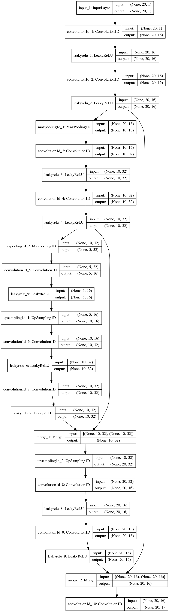
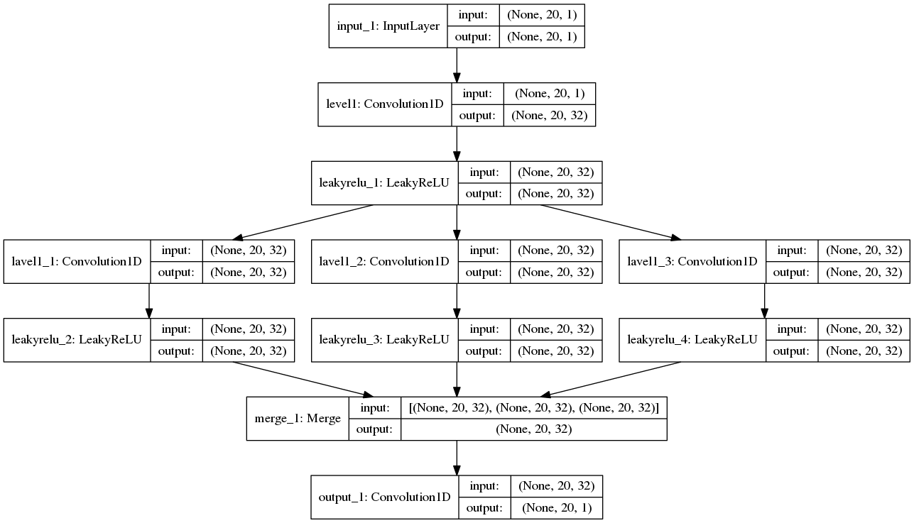

Quantized Speech Reconstruction CNN/SRCNN
- SRCNN GitHub
git clone https://github.com/ansleliu/QuantizedSpeechReconstructionCNN.git
Performance Result:
| Network | Description | Improved SNR (dB) | Improved PESQ |
|---|---|---|---|
| DDSRCNN20 | Deep Denoising Super-Resolution CNN/20 Input,20 Output. | 4.178/5.019(Overlap) | 0.452/0.824(Overlap) |
| DDSRCNN40 | Deep Denoising Super-Resolution CNN/40 Input,40 Output. | 4.844/5.449(Overlap) | 0.594/0.823(Overlap) |
| DDSRCNN80 | Deep Denoising Super-Resolution CNN/80 Input,80 Output. | 5.225/5.725(Overlap) | 0.860/1.109(Overlap) |
| ESRCNN20 | Expantion Super-Resolution CNN/20 Input,20 Output. | 3.625/4.135(Overlap) | 0.401/0.635(Overlap) |
| ESRCNN40 | Expantion Super-Resolution CNN/40 Input,40 Output. | 4.063/-.--(Overlap) | 0.537/-.--(Overlap) |
| ESRCNN80 | Expantion Super-Resolution CNN/80 Input,80 Output. | 4.764/-.--(Overlap) | 0.702/-.--(Overlap) |
| DNN20 | Deep Neural Network/20 Input,20 Output. | 2.511/3.523(Overlap) | 0.229/0.595(Overlap) |
| DNN40 | Deep Neural Network/40 Input,40 Output. | 3.500/down(Overlap) | down/down(Overlap) |
| DNN80 | Deep Neural Network/80 Input,80 Output. | 3.500/down(Overlap) | down/down(Overlap) |
Images

